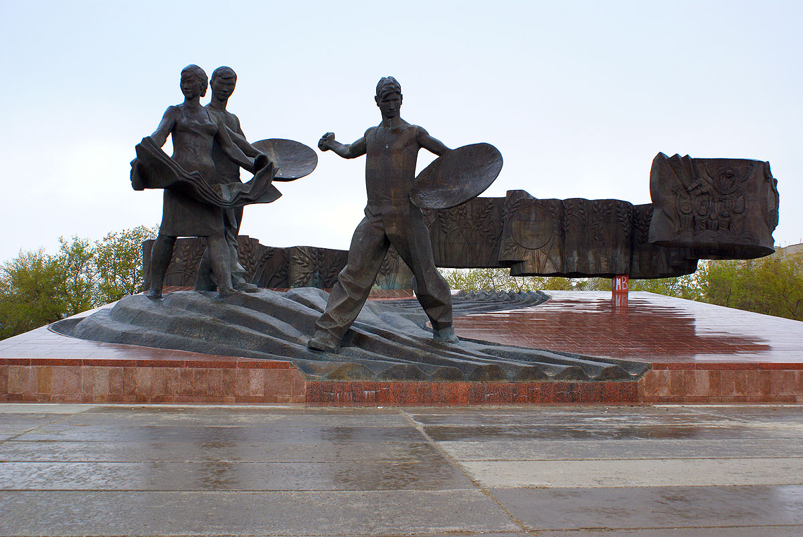
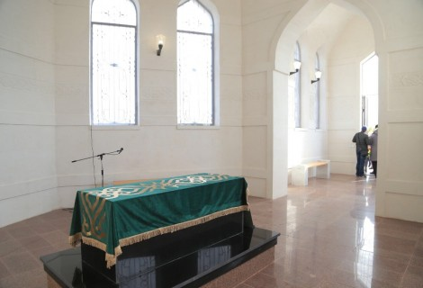

科斯塔奈胜利公园位于前城市东正教墓地的领土上。 它活跃于 19 世纪末至 1949 年。 在这里，在乱葬坑中，安放着内战期间阵亡者的骨灰，以及在医院中遇难的伟大卫国战争参与者、在斯大林格勒军事航空学校空难中丧生的学员和飞行员的骨灰，这是在战争年代位于科斯塔奈。 1949 年，市政府下令关闭墓地以供埋葬，1965 年开始在此地建造公园。 一年后，根据当地雕塑家别洛乌索夫兄弟的计划，在公园内竖立了一座纪念碑。 这是纪念墙，上面刻着在伟大卫国战争中牺牲的科斯塔奈人的名字。 创建了英雄巷。 1968年纪念馆落成。 同一天，永恒之火被点燃。

证明内战事件的历史和革命纪念碑。 “从 4 月 10 日晚上开始，对高尔察克惩罚者的屠杀开始了。 被俘的游击队员、怀疑同情游击队员的平民在大街上、人民之家的院子里、俄吉学校的院子里被枪杀。 古老的墓地四周环绕着一堵宽阔的荒石墙。 人们像一群羊一样被赶到这堵墙前被枪杀。 遇难和中弹游击队员的尸体被带到墓地广场两个星期（然后从Baimagambetov街到墓地没有建立起来）。 与此同时，城市和附近村庄的动员人口正在挖掘又长又深的万人坑。 哭声和呻吟声传遍整个广场，父亲、母亲、妻子，寻找着亲人和朋友的尸体。 不允许将尸体带离广场，有时亲属会在晚上设法将尸体带走单独安葬。 仅在两周后，当广场上空弥漫着一股死尸的恶臭时，被杀和被处决的游击队员的葬礼才完成。 随之而来的城市阴沉的寂静每天都被乱葬坑旁妇女的抽泣声打破。
处女地征服者纪念碑是位于科斯塔奈市中心的一座宏伟纪念碑，专门纪念哈萨克斯坦处女地开发时期。 它于1984年10月13日开放，以纪念哈萨克斯坦开发处女地30周年。 纪念碑的项目是由雕塑家 M.B. 创建的。 斯米尔诺夫和 A.P. Semenov 和位于 Tselinnikov 广场，前 Komsomolskaya 广场，离胜利公园不远。 纪念碑由两男一女三个年轻人的雕塑组成，还有一条随风飘扬的长长的荣耀彩带，上面可以看到处女地发展历史各个阶段的形象和处女的耳朵。小麦。 它的创建历时 15 年，耗费了 300 多吨青铜。 这座宏伟纪念碑的每个元素最初都是在莫斯科用粘土模型制作的，然后在明斯克用青铜铸造。 纪念碑的底部衬有巨大的花岗岩板。
杰出的哈萨克斯坦教育家、创新教师、民族志学家、作家、图尔盖地区公立学校督学 Ibray Altynsarin 的记忆被他的同胞神圣地保存着。 在 Kostanay 地区，靠近 Michurinskoye 村，坐落着 Ibray Altynsarin 的陵墓 - 具有国家意义的圣物。 Ibray Altynsarin 通过开设 14 所教育机构发起了哈萨克斯坦人民的世俗教育。 他编写了教科书《哈萨克语读本》和《哈萨克人俄语教学入门指南》，以及《伊斯兰教法》一书。 他的墓碑曾三次立碑：1960年、1981年、1991年。 在启蒙者诞辰 150 周年之际，在旧方尖碑的遗址上竖立了一座拱门式红砖陵墓。